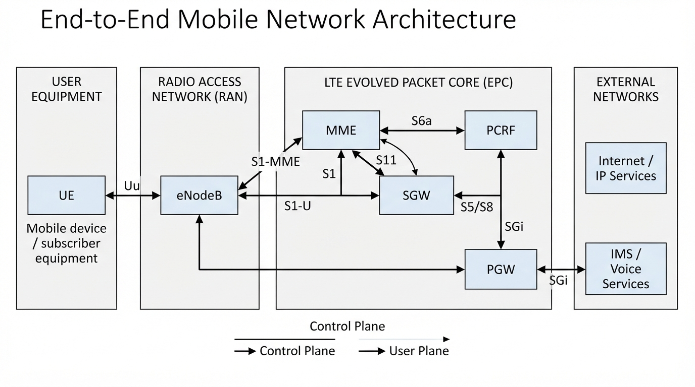
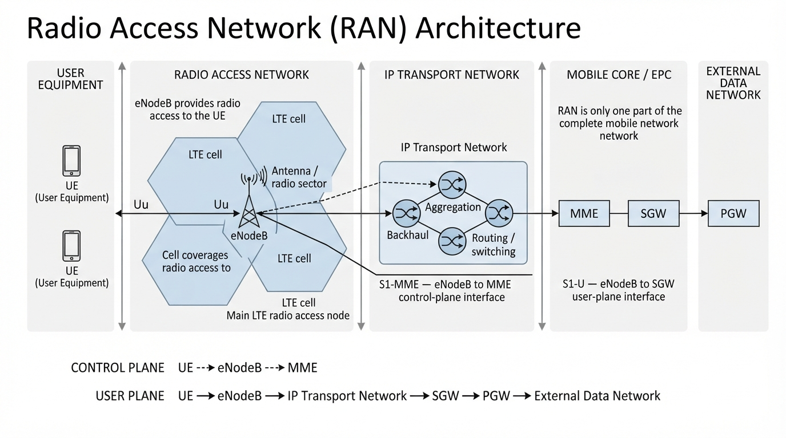
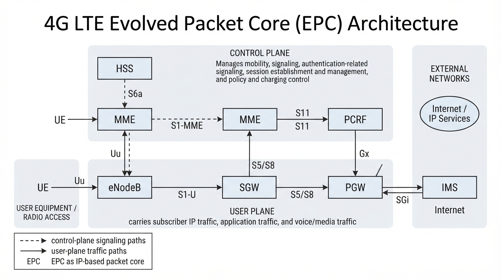
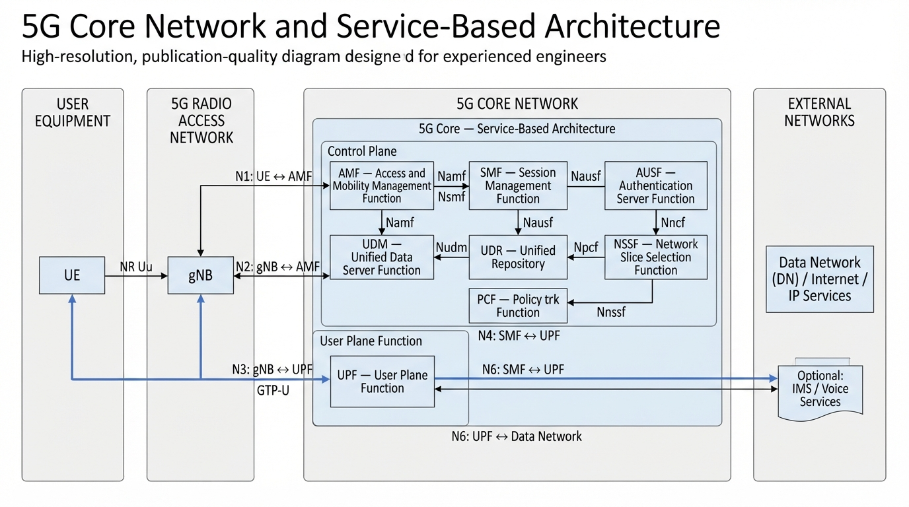
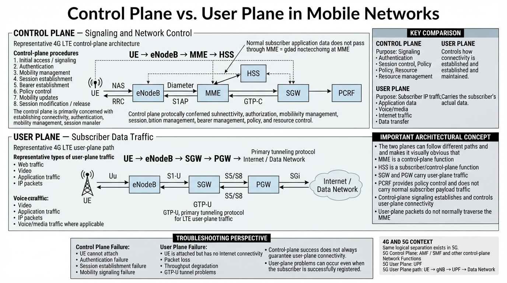
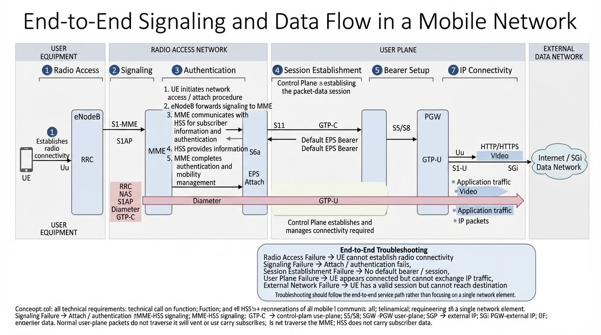

Chapter 1: Fundamentals of Mobile Networks and End-to-End Architecture
Modern mobile networks are large distributed systems in which radio access, IP networking, transport infrastructure, core network functions, cloud platforms, security mechanisms, and external data networks must operate together as a single end-to-end service.
Understanding this interaction is essential for network engineering, troubleshooting, performance analysis, deployment, testing, automation, and security. A failure experienced by a subscriber may originate in almost any part of this chain. A radio node may be operational while its transport connection is unavailable. A subscriber may successfully authenticate while its user-plane traffic is being dropped. A fully functional mobile core may still be unable to provide service because of an external routing, DNS, firewall, or application problem.
This chapter establishes the architectural and networking foundation used throughout the book. The objective is not simply to memorize network elements and interface names, but to develop an end-to-end mental model that allows an engineer to understand how a subscriber becomes connected, how signaling establishes communication state, how user traffic is forwarded, and how failures can be isolated to the smallest possible domain.

1.1 The End-to-End Mobile Network Model
A mobile network can be understood as a chain of interconnected domains. Although the physical implementation differs between operators and vendors, the logical model remains remarkably consistent.
At the highest level, subscriber connectivity follows a path similar to:
UE
|
| Radio Access
v
RAN
|
| IP Transport
v
Mobile Core
|
| Data Network
v
Internet / Enterprise Network / IMS / ApplicationEach domain performs a different role. The UE provides the subscriber endpoint. The RAN provides wireless connectivity. The transport network connects geographically distributed network elements. The mobile core performs functions such as authentication, mobility management, session management, policy enforcement, and packet forwarding. External networks provide access to services and destinations.
This separation is extremely important during troubleshooting. Consider a subscriber who reports that Internet access is unavailable. The symptom alone does not identify the responsible technology. The radio connection may be working correctly, while the actual failure exists in routing between the UPF and an external network. Conversely, an apparently simple connectivity problem may actually be caused by failed authentication or session establishment.
A good network engineer therefore thinks in terms of an end-to-end service path rather than individual network devices.
1.2 Evolution from 2G to 5G
Mobile networks have evolved through several generations. Each generation introduced improvements in radio technology, capacity, mobility, services, and packet-processing capabilities. At the same time, the network architecture progressively moved from specialized hardware and circuit-oriented systems toward highly distributed, software-based, packet-oriented platforms.

1.2.1 2G
Second-generation systems introduced digital cellular communication on a large scale. GSM became one of the most widely deployed cellular technologies in the world.
The original GSM architecture was strongly associated with circuit-switched voice and dedicated signaling functions for mobility management, authentication, and subscriber management.
The later introduction of GPRS and EDGE added packet-switched data capabilities. This was a significant architectural transition because mobile networks began transporting IP-based traffic alongside traditional circuit-switched services.
Several concepts introduced or expanded during this period became fundamental to later generations, including subscriber addressing, packet gateways, tunneling, mobility management, and packet-based charging.
1.2.2 3G
Third-generation systems increased data capacity and expanded packet-based services. UMTS introduced a more advanced radio access architecture while retaining separate circuit-switched and packet-switched domains.
The packet-switched architecture continued the industry's transition toward IP-based connectivity. Packet gateways provided connectivity to external packet networks while mobility management and subscriber databases continued to control authentication and service access.
From an engineering perspective, 3G represents an important transitional stage between predominantly circuit-oriented mobile networks and the fully packet-oriented architecture that followed.
1.2.3 4G LTE
LTE represented a major architectural transformation. The radio access network evolved into E-UTRAN, while the packet core became the Evolved Packet Core, or EPC.
LTE was designed as an almost entirely packet-based system. Traditional circuit-switched voice was no longer part of the LTE packet core. Instead, voice could be provided through IP Multimedia Subsystem (IMS) and Voice over LTE (VoLTE).
The EPC introduced several functions that remain fundamental to mobile network engineering:
- MME — control-plane mobility and session management.
- SGW — user-plane mobility anchoring and packet forwarding.
- PGW — connectivity toward external packet networks.
- HSS — subscriber information and authentication-related data.
- PCRF — policy and charging control.
LTE also made IP transport a fundamental part of the mobile architecture. GTP became central to subscriber traffic tunneling, while SCTP became important for several signaling interfaces.
1.2.4 5G
5G introduced another major architectural evolution. The 5G Core (5GC) was designed around a Service-Based Architecture (SBA), in which network functions expose services to other network functions through standardized service interfaces.
Important 5G Core functions include:
- AMF — Access and Mobility Management Function.
- SMF — Session Management Function.
- UPF — User Plane Function.
- PCF — Policy Control Function.
- UDM — Unified Data Management.
- AUSF — Authentication Server Function.
- NRF — Network Repository Function.
- NSSF — Network Slice Selection Function.
- NEF — Network Exposure Function.
- UDR — Unified Data Repository.
5G also strengthened the separation between control-plane logic and user-plane forwarding while enabling network functions to be distributed closer to subscribers and applications.
This architecture is significantly more software-oriented than earlier generations. Network functions can be implemented as virtualized network functions or cloud-native network functions and deployed on general-purpose compute infrastructure.
1.3 Major Domains of a Mobile Network
A practical mobile network can be divided into several logical domains. These domains may be physically distributed across multiple data centers, sites, regions, and cloud environments.
1.3.1 User Equipment
User Equipment (UE) represents the subscriber endpoint. It may be a smartphone, modem, router, industrial device, vehicle, IoT device, or another cellular terminal.
The UE participates in radio signaling with the RAN and establishes connectivity through the mobile core. From an IP perspective, the device eventually receives an address or prefix that allows it to communicate with external networks.
1.3.2 Radio Access Network
The Radio Access Network (RAN) provides the radio interface between the UE and the operator's infrastructure.
In LTE, the principal radio access element is the eNodeB. In 5G New Radio, the corresponding node is the gNodeB.
The RAN performs radio-related functions such as scheduling, radio resource management, mobility procedures, radio measurements, and communication with the core network.
Although the RAN is primarily associated with radio technology, it is also deeply dependent on IP networking. Traffic and signaling between RAN nodes and core functions commonly traverse Ethernet and IP transport networks.
1.3.3 Transport Network
The transport network connects distributed mobile-network elements. It may contain Ethernet switches, IP routers, optical transport systems, aggregation networks, synchronization infrastructure, and data-center networking.
Transport is particularly important because a single transport failure can affect many subscribers or multiple services simultaneously.
Typical transport functions include:
- Layer 2 connectivity.
- Layer 3 routing.
- Traffic engineering.
- Redundancy and path protection.
- Quality of Service.
- Network synchronization.
- Connectivity between geographically distributed sites.
1.3.4 Mobile Core
The mobile core provides centralized or distributed control and connectivity functions for subscribers.
Depending on the generation and architecture, the core performs authentication, mobility management, session management, policy control, subscriber-data management, packet forwarding, charging-related functions, and connectivity toward external networks.
1.3.5 External Data Networks
Mobile networks rarely terminate subscriber traffic inside the mobile core itself. Subscribers may access the public Internet, enterprise networks, private applications, IMS services, cloud platforms, or other interconnected networks.
The boundary between the mobile core and these external networks is therefore an important troubleshooting domain.
1.4 High-Level 4G and 5G Architectures
1.4.1 4G LTE Architecture

The LTE architecture separates control-plane functions from user-plane packet forwarding.
The MME is responsible for important control-plane procedures such as mobility management, authentication coordination, and bearer establishment. It does not normally carry subscriber application traffic.
The SGW and PGW participate in the user plane. The SGW provides an important mobility anchor within the EPC, while the PGW provides connectivity toward external packet networks.
The HSS contains subscriber-related information and supports authentication procedures. The PCRF provides policy and charging-control decisions.
This separation is useful when troubleshooting. If a subscriber cannot attach to LTE, the engineer will investigate control-plane procedures. If the subscriber attaches successfully but cannot exchange IP traffic, the investigation may shift toward the user plane, routing, GTP tunnels, policy, or external connectivity.
1.4.2 5G Standalone Architecture

In 5G Standalone, the gNB connects to the 5G Core. The AMF handles access and mobility management, while the SMF controls PDU Session establishment and the UPF provides user-plane packet forwarding.
The 5G Core contains a larger number of specialized network functions. Many of these functions communicate through Service-Based Interfaces using HTTP/2 and related service-oriented mechanisms.
This architecture changes the way engineers must think about mobile networks. Instead of viewing the core as a collection of specialized physical appliances, the engineer increasingly needs to understand software services, APIs, IP connectivity, service discovery, cloud infrastructure, containers, orchestration, and distributed packet processing.
1.5 Control Plane and User Plane
One of the most important concepts in mobile network engineering is the distinction between the control plane and the user plane.

1.5.1 Control Plane
The control plane is responsible for signaling, state establishment, and decision-making. It establishes the conditions required for communication rather than carrying the subscriber's application payload itself.
Examples include:
- Authentication.
- Registration and attach procedures.
- Mobility management.
- Session establishment.
- Bearer establishment.
- Policy decisions.
- Network-function discovery.
- Subscriber authorization.
A control-plane failure can prevent a subscriber from obtaining service even when physical and IP connectivity between network elements is completely operational.
1.5.2 User Plane
The user plane carries subscriber traffic. Web browsing, video streaming, application traffic, voice media, VPN traffic, and other payloads are examples of user-plane traffic.
In LTE and many 5G deployments, GTP-U is used to encapsulate subscriber packets while they cross portions of the mobile transport network.
User-plane traffic can fail even after all major control procedures have completed successfully. For example, a subscriber may register successfully and establish a PDU Session while packets are dropped due to incorrect routing, an invalid GTP tunnel, MTU problems, firewall policies, or an unavailable external network.
1.5.3 Why the Distinction Matters
A useful troubleshooting question is:
Is the failure preventing the network from establishing the required state, or is the established state unable to forward traffic?
The first situation generally indicates a control-plane problem. The second generally points toward the user plane or another component of the data path.
This distinction can dramatically reduce the troubleshooting search space. An engineer should avoid investigating every network layer when the available evidence has already eliminated several domains.
1.6 Layered Networking in Mobile Systems
Mobile networks use multiple protocol layers simultaneously. An engineer must understand traditional networking layers as well as telecom-specific protocols and tunneling mechanisms.
A simplified IP networking stack is:
Application
|
Transport
|
IP
|
Ethernet
|
Physical NetworkMobile networking adds additional protocol layers. A subscriber IP packet may be encapsulated inside GTP-U, which is transported using UDP over IP. The resulting packet therefore contains both the subscriber's original packet and an outer transport packet.
Subscriber IP Packet
|
v
GTP-U
|
v
UDP
|
v
IP
|
v
EthernetThis layered structure is fundamental to packet analysis. A packet capture may show an outer IP address belonging to two mobile-network elements while the encapsulated packet contains an entirely different subscriber source and destination.
An engineer who only examines the outer IP header may therefore miss the actual subscriber communication being transported through the network.
1.7 Ethernet and Layer 2 Fundamentals
Although mobile networks are commonly described in terms of 4G and 5G protocols, Ethernet remains one of the fundamental technologies beneath the IP transport infrastructure.
1.7.1 MAC Addresses
Ethernet uses Media Access Control (MAC) addresses to identify interfaces within a Layer 2 domain.
Ethernet switches maintain MAC address tables that allow frames to be forwarded toward the appropriate interface. Incorrect VLAN configuration, MAC learning problems, loops, or Layer 2 failures can therefore cause connectivity problems even when Layer 3 configuration appears correct.
1.7.2 VLANs
Virtual Local Area Networks provide logical Layer 2 segmentation. Operators can use VLANs to separate different categories of traffic or different operational functions.
Examples may include:
- Management traffic.
- Control-plane traffic.
- User-plane traffic.
- Synchronization traffic.
- Operations and maintenance traffic.
The exact segmentation model varies between operators. A VLAN problem may appear at a higher layer as an IP routing failure, signaling failure, or unreachable network function.
1.7.3 MTU
Maximum Transmission Unit (MTU) defines the largest packet that can normally be transmitted through a Layer 3 interface without fragmentation at that interface.
Mobile networks frequently use encapsulation and tunneling. Every additional protocol header consumes part of the available packet size.
As a result, an MTU problem can produce subtle failures. Small packets may work while larger packets fail. Applications that generate larger segments can therefore expose a problem that simple ping tests do not.
MTU considerations become particularly important when troubleshooting GTP tunnels, VPNs, IPv6, cloud networking, and complex overlay networks.
1.8 IPv4 and IPv6 in Mobile Networks
1.8.1 IPv4
IPv4 remains extensively deployed in mobile networks. Subscriber addresses may be dynamically assigned from address pools and may be private addresses that are translated through Carrier-Grade NAT before reaching the public Internet.
Network engineers must understand subnetting, routing, address pools, default gateways, and address translation when investigating subscriber connectivity.
1.8.2 IPv6
IPv6 provides a substantially larger address space and has become increasingly relevant to mobile networks.
IPv6 introduces mechanisms such as Neighbor Discovery, Router Advertisements, prefixes, and link-local addresses. Troubleshooting IPv6 therefore requires knowledge beyond traditional IPv4 ARP-based analysis.
1.8.3 Dual-Stack Deployments
Many environments support both IPv4 and IPv6. Dual-stack operation creates additional troubleshooting dimensions because applications may prefer one protocol family while the underlying network behaves differently for the other.
A useful troubleshooting approach is to explicitly determine:
- Which address family the subscriber received.
- Which address family the application is using.
- Whether DNS returned IPv4 and IPv6 records.
- Whether routing exists for the selected address family.
- Whether security policies allow both protocols.
1.9 Transport Protocols: TCP, UDP and SCTP
1.9.1 TCP
Transmission Control Protocol provides reliable, connection-oriented transport. It uses sequence numbers, acknowledgements, retransmission, flow control, and congestion control.
TCP is widely used by applications and network-control technologies. In the 5G Service-Based Architecture, HTTP/2-based communication normally operates over TCP.
1.9.2 UDP
User Datagram Protocol provides connectionless transport with minimal overhead. UDP itself does not provide reliable delivery, sequencing, or retransmission.
UDP is particularly important in mobile user-plane networking because GTP-U uses UDP as its transport protocol.
1.9.3 SCTP
Stream Control Transmission Protocol provides message-oriented transport with features designed for signaling applications.
SCTP is particularly important in LTE, where S1AP signaling between eNodeBs and MMEs is transported over SCTP/IP.
This means that a failure in SCTP association establishment can prevent higher-level mobile signaling from operating even when basic IP connectivity exists.
Physical connectivity
|
v
Ethernet connectivity
|
v
IP connectivity
|
v
SCTP association
|
v
Application signaling1.10 DNS in Mobile Networks
The Domain Name System translates domain names into IP addresses and is essential to modern service delivery.
DNS can be involved in several parts of a mobile environment. Subscriber applications may require DNS resolution to access Internet services, while network functions may also rely on DNS or service-discovery mechanisms depending on the architecture.
A subscriber may therefore have a valid IP address and a functioning packet path while applications still fail because DNS resolution is unavailable.
When troubleshooting DNS-related problems, the engineer should separate name resolution from packet forwarding.
Application
|
v
DNS Resolution
|
v
Destination IP
|
v
Routing
|
v
Packet ForwardingTesting a destination by IP address can help determine whether the underlying IP path is functional when DNS resolution is suspected.
1.11 IP Routing Fundamentals
Routing determines how packets move between different IP networks. Mobile networks depend heavily on routing because RAN sites, core functions, data centers, cloud platforms, and external networks are normally distributed across multiple subnets.
1.11.1 Routing Tables
A router makes forwarding decisions based on its routing table. The destination IP address is compared against available prefixes, and the most specific matching route is normally selected.
A routing problem can therefore exist even when every interface is operational. An interface being up does not guarantee that a correct route exists toward the destination.
1.11.2 Static Routing
Static routes are manually configured and can be useful in simple or highly controlled environments. They may be used for specific paths, default routes, or fallback scenarios.
At large scale, however, static routing becomes difficult to maintain because topology changes must be handled manually.
1.11.3 Dynamic Routing
Dynamic routing protocols allow routers to exchange reachability information and automatically adapt to topology changes.
Protocols such as OSPF, IS-IS, and BGP are widely used in service provider and data-center environments.
At this stage, the most important concept is that mobile traffic depends on the underlying IP network having valid and converged routes between network functions and toward external destinations.
1.12 GTP and Mobile Traffic Tunneling
Mobile networks require mechanisms that maintain subscriber-specific traffic paths while subscribers move through the radio network and while packet-processing functions remain distributed.
GPRS Tunneling Protocol (GTP) provides essential tunneling capabilities in several generations of mobile networks.
1.12.1 GTP Control Plane
GTP-C is used for control-plane procedures associated with tunnels and subscriber sessions.
In LTE, GTP-C participates in procedures between EPC network functions. These procedures create, modify, and remove the state required for subscriber traffic forwarding.
1.12.2 GTP User Plane

GTP-U encapsulates subscriber IP packets inside GTP tunnels. The outer transport headers identify the mobile-network transport path, while the encapsulated packet contains the actual subscriber traffic.
This distinction is fundamental during packet analysis. An engineer may observe a packet traveling between two core-network IP addresses even though the payload represents a subscriber communicating with a completely different destination.
GTP-U analysis therefore requires understanding both the outer transport network and the encapsulated subscriber packet.
1.13 Mobile Network Interfaces
Mobile architectures define standardized logical interfaces between network functions. Understanding these interfaces allows engineers to identify where signaling or traffic should be observed.
1.13.1 Important LTE Interfaces
| Interface | Purpose |
|---|---|
| S1-MME | Control-plane signaling between the eNodeB and MME. |
| S1-U | User-plane traffic between the eNodeB and SGW. |
| S5/S8 | Connectivity between SGW and PGW. |
| S11 | Control-plane signaling between MME and SGW. |
| SGi | Connectivity between PGW and external packet networks. |
| S6a | Diameter signaling between MME and HSS. |
These interfaces provide a logical map for LTE troubleshooting. If an attach procedure fails, the engineer can determine which signaling interfaces should contain the relevant transaction.
1.13.2 Important 5G Interfaces
| Interface | Purpose |
|---|---|
| N1 | Signaling between the UE and AMF. |
| N2 | Control-plane signaling between gNB and AMF. |
| N3 | User-plane traffic between gNB and UPF. |
| N4 | Control interface between SMF and UPF. |
| N6 | Connection between UPF and the external data network. |
| N11 | Interface between AMF and SMF. |
The 5G architecture also contains numerous Service-Based Interfaces between network functions. These become increasingly important as the network evolves toward distributed and cloud-native implementations.
1.14 End-to-End Subscriber Connectivity
The most useful way to understand a mobile network is to follow an actual subscriber transaction from beginning to end.
Consider a subscriber attempting to access an Internet application. Several distinct stages are involved.
1.14.1 Radio Connectivity
The UE establishes radio connectivity with the serving cell. The RAN exchanges signaling with the core network to initiate registration, authentication, mobility management, and session procedures.
1.14.2 Authentication and Registration
The mobile core validates the subscriber identity and establishes the necessary security and mobility state.
A failure at this stage prevents the subscriber from reaching later session-establishment procedures.
1.14.3 Session Establishment
The network establishes the resources required for user-plane connectivity. In LTE this involves bearer establishment. In 5G Standalone, the corresponding concept is the PDU Session.
1.14.4 IP Address Assignment
The subscriber receives an IP address or prefix according to the deployed architecture and requested connectivity.
1.14.5 User-Plane Establishment
The network establishes the user-plane path through the relevant packet forwarding functions.
UE
|
| Radio
v
gNB
|
| N3 / GTP-U
v
UPF
|
| N6
v
Data Network
|
v
Internet / Application1.14.6 Application Connectivity
Once the IP path is operational, the application can establish its own transport and application sessions.
At this point, the mobile network has successfully transformed a radio subscriber into an IP endpoint capable of communicating with external services.
1.15 Failure Domains
A major advantage of the end-to-end model is that failures can be classified into logical domains.

1.15.1 Radio Failure
The UE may fail to establish or maintain radio connectivity because of coverage, interference, configuration, mobility, radio-resource, or hardware problems.
1.15.2 Transport Failure
The radio node may be operational while the IP transport path toward the core is unavailable.
Examples include:
- Broken Ethernet connectivity.
- Incorrect VLAN configuration.
- Missing routes.
- Routing protocol failure.
- Packet loss.
- MTU problems.
- Interface errors.
- Congestion.
1.15.3 Core Control-Plane Failure
IP connectivity between network functions may be operational while signaling fails because of incorrect configuration, unavailable network functions, authentication problems, protocol failures, or inconsistent subscriber data.
1.15.4 User-Plane Failure
The subscriber may successfully register and establish a session while user traffic fails.
Typical causes include:
- Missing routes.
- Incorrect GTP tunnel state.
- Firewall rules.
- Incorrect packet-forwarding configuration.
- MTU issues.
- UPF or gateway failures.
- External network failures.
- Asymmetric routing.
1.15.5 Application Failure
Finally, the mobile network may be functioning correctly while the destination application is unavailable or malfunctioning.
A senior engineer must therefore avoid automatically attributing every subscriber problem to the mobile network.
1.16 End-to-End Troubleshooting Methodology
Troubleshooting complex mobile networks requires a structured methodology. Randomly checking devices often increases investigation time because each engineer may examine a different layer without first establishing a clear failure boundary.
A practical methodology is:
- Define the exact symptom.
- Identify the affected subscribers, sites, or services.
- Determine whether the problem is isolated or systemic.
- Identify the last confirmed working point.
- Separate control-plane and user-plane behavior.
- Validate Layer 1 and Layer 2 connectivity.
- Validate IP addressing and routing.
- Validate transport-layer connectivity.
- Inspect the relevant telecom signaling.
- Inspect the user-plane packet path.
- Correlate logs, counters, alarms, and packet captures.
- Identify the smallest failure domain consistent with the evidence.
1.16.1 Start with the Symptom
"The network is down" is not a useful engineering symptom.
A better description would be:
LTE subscribers at Site Group A can attach successfully but cannot reach external IPv4 destinations, while IPv6 connectivity remains operational.
The second description immediately reduces the investigation scope. It suggests that the radio and at least part of the control plane are operational and points toward an IPv4-specific user-plane or external network problem.
1.16.2 Determine the Scope
Scope is one of the strongest diagnostic signals available to a network engineer.
If one subscriber is affected, subscriber-specific configuration may be relevant. If thousands of subscribers across multiple sites are affected, a shared infrastructure component becomes more likely.
Useful questions include:
- Is the problem affecting one UE or many UEs?
- Is it limited to one cell?
- Is it limited to one geographic region?
- Is it limited to one APN or DNN?
- Is it limited to IPv4 or IPv6?
- Is it limited to one application?
- Did the problem begin after a configuration change?
1.16.3 Find the Last Known Good Point
One of the most valuable troubleshooting questions is:
Where does the expected behavior stop?
For example, suppose registration and PDU Session establishment are successful, but user traffic does not reach the external network. Investigating radio registration would be inefficient because the available evidence has already demonstrated that registration works.
The engineer should instead move toward the first point where expected user-plane behavior disappears.
1.17 Packet Capture and Protocol Analysis
Packet captures are among the most powerful sources of evidence available to a network engineer.
Tools such as Wireshark and TShark allow engineers to inspect packets at multiple protocol layers and correlate network behavior with signaling procedures.
1.17.1 Layer-by-Layer Analysis
A useful packet-analysis strategy is to move from lower layers toward the application rather than immediately searching for a particular message.
Ethernet
|
IP
|
Transport
|
Telecom Protocol
|
Tunnel
|
Subscriber Packet
|
ApplicationWhen analyzing GTP-U, for example, the engineer should first confirm that the outer Ethernet, IP, and UDP packets are present. The GTP tunnel information should then be examined before decoding the encapsulated subscriber packet.
1.17.2 Capture Points Matter
A packet capture is meaningful only in the context of where it was collected.
A packet observed entering a network function does not prove that it was forwarded successfully out of that function.
Comparing captures at multiple points can identify the precise location where packets disappear.
For example, if a packet is observed entering a UPF through N3 but the corresponding packet is absent from N6, the investigation can focus on UPF forwarding behavior, routing, policy, firewall configuration, or packet-processing logic rather than the radio access network.
1.18 Logs, Counters, Alarms and Metrics
Packet captures provide detailed protocol evidence, but production troubleshooting rarely depends on packet captures alone.
A complete investigation typically correlates several observability sources:
- System logs.
- Protocol traces.
- Interface counters.
- Network alarms.
- CPU and memory metrics.
- Packet-loss statistics.
- Latency measurements.
- Session counters.
- Throughput statistics.
- Application logs.
The key principle is correlation. A single metric rarely identifies a root cause by itself.
For example, high packet loss combined with increasing interface errors and a corresponding increase in retransmissions provides much stronger evidence than packet loss alone.
1.19 Performance and Quality of Service
Functional connectivity is only one dimension of network quality. Production mobile networks must also satisfy performance requirements.
Important metrics include:
- Latency.
- Jitter.
- Packet loss.
- Throughput.
- Connection setup time.
- Session establishment success rate.
- CPU utilization.
- Memory utilization.
- Interface utilization.
- Packets per second.
Quality of Service mechanisms allow networks to treat different traffic classes according to defined policies.
In mobile networks, QoS is closely associated with subscriber sessions, bearers, QoS flows, policy control, and packet forwarding. These concepts are examined in greater detail later in the book.
1.20 Redundancy and High Availability
Carrier-grade networks cannot depend on individual network elements remaining operational indefinitely. Redundancy is therefore an architectural requirement rather than an optional feature.
Redundancy can exist at multiple levels:
- Physical interface redundancy.
- Link redundancy.
- Router redundancy.
- Network-function redundancy.
- Data-center redundancy.
- Geographic redundancy.
- Cloud-platform redundancy.
A network engineer must understand not only the primary path but also how traffic is expected to behave when that path fails.
This introduces engineering concepts such as convergence, failover time, route withdrawal, state synchronization, load balancing, and session persistence.
1.21 Practical Troubleshooting Scenario
Consider a 5G Standalone deployment in which subscribers report that they can successfully register on the network but cannot access the Internet.
Observed Symptoms
- UE detects the 5G cell.
- Registration completes successfully.
- Authentication succeeds.
- PDU Session Establishment succeeds.
- The UE receives an IP address.
- Internet applications fail.
Initial Analysis
The evidence already eliminates several potential failure domains. Radio access is functioning sufficiently for registration. Authentication is functioning. The control plane has successfully established a PDU Session.
The investigation should therefore move toward the user plane.
Recommended Investigation
- Verify that the PDU Session is active in the SMF.
- Verify the corresponding PFCP state between SMF and UPF.
- Verify the expected GTP-U tunnel parameters.
- Capture traffic on the N3 interface.
- Confirm that subscriber packets reach the UPF.
- Inspect the N6 interface.
- Verify routing toward the external data network.
- Verify return routing toward the subscriber address pool.
- Check firewall and security policies.
- Check MTU and fragmentation behavior.
- Test connectivity using packet capture and active probes.
Suppose the capture shows packets arriving at the UPF through N3 but no corresponding packets leaving N6. The investigation can now focus on UPF forwarding behavior, routing, policy, or packet-processing configuration.
If packets leave the UPF but no response returns from the external network, the investigation moves toward routing, firewall policies, NAT, or the external network.
This illustrates a fundamental principle:
Troubleshooting should follow evidence across the packet path rather than assumptions about which technology is responsible.
1.22 The Network Engineer's Mental Model
A senior network engineer should maintain several simultaneous views of the network.
Architectural View
Understand which network functions exist, why they exist, and how they interact.
Protocol View
Understand which protocol should be present on each interface and which messages or packet types indicate normal operation.
Packet View
Understand how data is encapsulated, transported, decapsulated, and forwarded through the network.
Routing View
Understand how the network determines the next hop toward each destination and how routing changes during failures.
Operational View
Understand alarms, logs, metrics, changes, deployments, failures, and recovery procedures.
Performance View
Understand whether the network is merely functioning or actually meeting its capacity, latency, availability, and QoS objectives.
The ability to move between these perspectives is one of the defining characteristics of senior-level network engineering.
1.23 Chapter Summary
Mobile networks are distributed systems that combine radio access, Ethernet, IP routing, transport protocols, telecom signaling, packet tunneling, cloud infrastructure, security mechanisms, and external data networks.
The evolution from 2G to 4G and 5G progressively increased the role of packet networking and software-based network functions. LTE introduced the EPC and an extensively IP-based architecture, while 5G introduced the Service-Based Architecture and a more cloud-oriented approach to network functions.
The distinction between control plane and user plane is fundamental. Control-plane procedures establish the state required for communication, while the user plane carries subscriber traffic.
Ethernet, VLANs, IP addressing, routing, TCP, UDP, SCTP, DNS, and GTP form important parts of the networking foundation underneath mobile services.
Effective troubleshooting requires an end-to-end approach. Engineers should define the symptom, determine the scope, identify the last known good point, separate control-plane and user-plane behavior, validate lower-layer connectivity, inspect signaling and packet flows, and correlate packet captures with logs, counters, alarms, and metrics.
The following chapters build upon this foundation by examining IP networking in greater depth, followed by detailed 4G and 5G Core architectures, signaling, user-plane behavior, cloud-native infrastructure, security, observability, testing, deployment, and automation.
1.24 Key Concepts
- Mobile networks consist of UE, RAN, transport, core, and external network domains.
- LTE introduced the EPC as an IP-centric mobile core architecture.
- 5G introduced the 5G Core and Service-Based Architecture.
- Control-plane and user-plane functions must be analyzed separately.
- Ethernet and IP networking provide fundamental transport capabilities for mobile networks.
- TCP, UDP, and SCTP serve different transport requirements.
- GTP provides essential tunneling capabilities in mobile networks.
- Routing determines how packets reach distributed network functions and external networks.
- DNS can affect service availability independently of basic IP connectivity.
- Packet captures provide evidence of actual protocol behavior.
- Logs, metrics, counters, and alarms complement packet-level analysis.
- End-to-end troubleshooting should identify the smallest failure domain consistent with the available evidence.
- Successful session establishment does not necessarily guarantee successful user-plane connectivity.
1.25 Engineering Checklist
When investigating a mobile connectivity problem, an engineer should be able to answer the following questions:
- What exactly is the observed symptom?
- How many subscribers or network elements are affected?
- Which geographical areas are affected?
- Is radio connectivity operational?
- Is control-plane signaling operational?
- Has the subscriber successfully authenticated?
- Has a session or bearer been established?
- Has an IP address or prefix been assigned?
- Is the user-plane tunnel operational?
- Does the expected route exist?
- Are packets arriving at the expected interface?
- Are packets leaving the expected interface?
- Is return traffic following a valid path?
- Could MTU, fragmentation, or packet loss be involved?
- Could a firewall or security policy be blocking the traffic?
- Did a recent configuration or network change precede the problem?
- Can the failure be reproduced and verified with packet captures or active tests?
1.26 Final Perspective
The most important lesson of this chapter is that a mobile network should not be viewed as a collection of isolated technologies.
A subscriber's experience is the result of a continuous chain of dependencies extending from the radio interface through Ethernet and IP transport, mobile-core signaling, packet tunnels, routing, security policies, external networks, and ultimately the application itself.
When something fails, the engineer's task is not simply to find a device that reports an alarm. The objective is to determine where the expected behavior stops and to prove that boundary using technical evidence.
This mindset provides the foundation for the remainder of this book. The following chapters progressively move deeper into the individual protocols, architectures, packet flows, cloud platforms, and security mechanisms that make modern mobile networks operate.